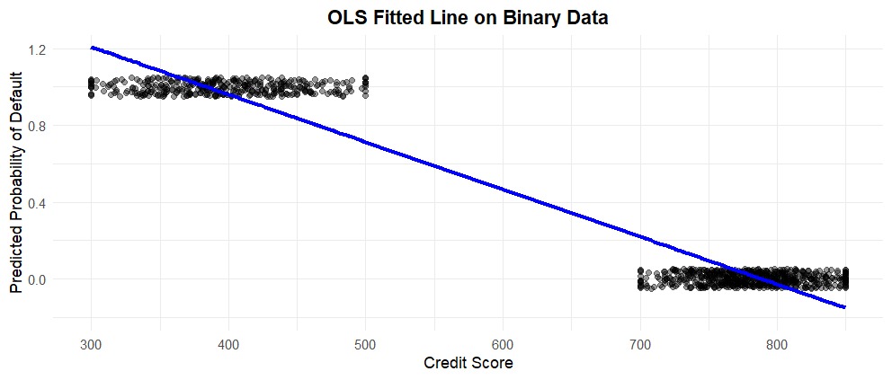
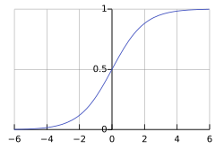

Binary Logistic Regression
Learning Objectives
By the end of this chapter, you will be able to:
- Explain how Binary Logistic Regression models the probability of a binary outcome using log-odds.
- Describe why Ordinary Least Squares is not appropriate for binary outcomes, and how the logistic function addresses this.
- Fit a binary logistic regression model in both
RandPython.
- Interpret log-odds, odds ratios, and predicted probabilities in real-world contexts.
- Evaluate model fit using metrics such as accuracy, confusion matrices, and ROC curves.
- Identify when binary logistic regression is the appropriate tool, and understand its limitations.
8.1 Introduction
In many real-world problems, the outcome we’re trying to predict is not a number — it’s a yes or no, success or failure, clicked or didn’t click. For example:
- Will a student default on a loan given their credit score and income?
- Will a student pass a course based on whether they have a part-time job and how many hours they studied?
- Will a student likely graduate within 4 years, based on their academic record and declared major?
These outcomes are binary: they can take on only two possible values, typically coded as 1 (event occurs) and 0 (event does not occur).
To model such outcomes, we need a regression approach that produces predicted probabilities between 0 and 1 — not arbitrary numbers on the real line. This is where Binary Logistic Regression comes in.
In this chapter, we’ll see how logistic regression: - Links input variables to the log-odds of the outcome, - Produces interpretable coefficients (like odds ratios), and - Helps us make informed predictions in binary classification problems.
8.2 Why Ordinary Least Squares Fails for Binary Outcomes
To understand the need for logistic regression, consider applying Ordinary Least Squares (OLS) to a binary outcome.
Suppose we are trying to predict whether a student defaulted on a loan (1) or did not default (0) using a continuous predictor like credit_score.
Before diving into the technical reasons why OLS is inappropriate for binary outcomes, let’s look at a simplified version of the dataset we’ll use throughout this chapter:
# Prepare data: numeric default variable and select predictor
blr_data <- BLR %>%
select(credit_score, defaulted) %>%
mutate(defaulted = as.numeric(defaulted))Below is a sample of this dataset:
| credit_score | income | education_years | married | owns_home | age | defaulted | successes | trials |
|---|---|---|---|---|---|---|---|---|
| 787 | 118911 | 17 | 0 | 0 | 47 | 0 | 9 | 10 |
| 441 | 53122 | 13 | 0 | 1 | 50 | 1 | 2 | 10 |
| 407 | 39174 | 10 | 1 | 0 | 50 | 1 | 5 | 10 |
| 812 | 148982 | 12 | 1 | 1 | 32 | 0 | 8 | 10 |
| 825 | 154293 | 16 | 1 | 0 | 41 | 0 | 7 | 10 |
| 729 | 111562 | 15 | 1 | 0 | 64 | 0 | 7 | 10 |
| 700 | 70000 | 15 | 0 | 1 | 46 | 0 | 8 | 10 |
| 451 | 40311 | 12 | 0 | 1 | 59 | 1 | 4 | 10 |
| 404 | 45944 | 13 | 0 | 0 | 53 | 1 | 4 | 10 |
| 374 | 43167 | 11 | 0 | 0 | 34 | 1 | 4 | 10 |
Now, let’s narrow in on the key variables of interest for this section.
| credit_score | defaulted |
|---|---|
| 787 | 0 |
| 441 | 1 |
| 407 | 1 |
| 812 | 0 |
| 825 | 0 |
| 729 | 0 |
| 700 | 0 |
| 451 | 1 |
| 404 | 1 |
| 374 | 1 |
This dataset allows us to examine whether a student defaulted on a loan (defaulted = 1) based on their credit_score. It’s a classic binary outcome: a “yes” or “no” event.
If we use OLS, we estimate:
\[ \mathbb{E}(Y_i \mid X_i) = \pi_i = \beta_0 + \beta_1 X_i \]
This means we’re treating the probability of default (\(\pi_i\)) as a linear function of credit score.
However, there are two fundamental issues with using OLS here:
- The linear model can produce predicted values less than 0 or greater than 1 — which doesn’t make sense when modeling a probability.
- OLS assumes constant variance of the residuals, but binary outcomes inherently violate this assumption, because their variance depends on the mean:
\[ \text{Var}(Y_i) = \pi_i(1 - \pi_i) \]
To see this issue in action, let’s try fitting an OLS regression model using our binary outcome and a continuous predictor. While OLS is designed to minimize squared error, it doesn’t account for the discrete nature of the response — which means it can return predicted probabilities below 0 or above 1. In the example below, we use a customer’s credit score to predict the probability of default, and you’ll see how the linear model fails to respect the fundamental constraints of probability.

These limitations make OLS unsuitable for binary classification tasks.
To properly model binary outcomes, we need a method that:
- Produces predictions strictly between 0 and 1,
- Accounts for the fact that the variance depends on the mean, and
- Connects our predictors to the probability of the event in a way that is easy to interpret.
The key idea is to transform the probability so that it can be modeled as a linear function without breaking these rules.
In the next section, we’ll see how the logit transformation does exactly that.
# ⚠️ This OLS fit is not appropriate for binary outcomes.
# We include it here only to illustrate why logistic regression is needed.
# Load necessary libraries
library(ggplot2)
library(dplyr)
# Prepare data: numeric default variable and select predictor
blr_data <- BLR %>%
select(credit_score, defaulted) %>%
mutate(defaulted = as.numeric(defaulted))
# Fit an OLS model (not ideal for binary outcome)
ols_model <- lm(defaulted ~ credit_score, data = blr_data)
# Add predicted values
blr_data$predicted <- predict(ols_model, newdata = blr_data)
# Plot actual data and OLS-fitted line
plot <- ggplot(blr_data, aes(x = credit_score, y = defaulted)) +
geom_jitter(height = 0.05, width = 0, alpha = 0.4, color = "black") +
geom_line(aes(y = predicted), color = "blue", linewidth = 1.2) +
labs(
title = "OLS Fitted Line on Binary Data",
x = "Credit Score",
y = "Predicted Probability of Default"
) +
coord_cartesian(ylim = c(-0.2, 1.2)) +
theme_minimal() +
theme(plot.title = element_text(hjust = 0.5, face = "bold"))
plot# ⚠️ This OLS fit is not appropriate for binary outcomes.
# We include it here only to illustrate why logistic regression is needed.
import pandas as pd
import numpy as np
import matplotlib.pyplot as plt
import statsmodels.api as sm
# Extract relevant columns from the BLR dataset
blr = r.data['BLR']
df = blr[['credit_score', 'defaulted']].copy()
df['defaulted'] = df['defaulted'].astype(int)
# Fit an OLS model
X = sm.add_constant(df['credit_score'])
model = sm.OLS(df['defaulted'], X).fit()
df['predicted'] = model.predict(X)
# Plot the actual binary outcomes and OLS predictions
fig, ax = plt.subplots(figsize=(6, 4))
ax.scatter(df['credit_score'], df['defaulted'], alpha=0.4, color='black', label='Actual Data', s=20)
ax.plot(df['credit_score'], df['predicted'], color='blue', label='OLS Fit', linewidth=2)
ax.set_title("OLS Fitted Line on Binary Data", fontsize=14, fontweight='bold')
ax.set_xlabel("Credit Score")
ax.set_ylabel("Predicted Probability of Default")
ax.set_ylim(-0.2, 1.2)
ax.legend()
plt.grid(True)
plt.tight_layout()
plt.show()8.3 The Logit Function
In Section 8.2, we saw that modeling probability directly with a linear equation can produce impossible values (less than 0 or greater than 1) and ignores the way variance changes with the mean.
The fix is to apply a transformation that:
- Expands the (0, 1) probability range to the entire real line,
- Is reversible, so we can convert back to probabilities, and
- Preserves the ordering of probabilities.
One transformation that checks all these boxes is the logit function.
8.3.1 Logit: A Link Between Probability and Linear Predictors
The logit function transforms the probability \(\pi_i\) into a value on the entire real line: \[ \text{logit}(\pi_i) = \log\!\left(\frac{\pi_i}{1 - \pi_i}\right) = \beta_0 + \beta_1 X_i \]
This transformation:
- Is monotonic (it preserves order),
- Maps probabilities \(\pi_i \in (0, 1)\) to \((-\infty, \infty)\), and
- Solves the range issue of OLS by letting us fit a linear model in the transformed space.
By modeling the log-odds as a linear function of predictors and then inverting the transformation, we obtain valid predicted probabilities that remain within \([0,1]\).
Note
The logit function is defined as: \[ \text{logit}(\pi_i) = \log\!\left(\frac{\pi_i}{1 - \pi_i}\right) \] It models the log-odds of the outcome as a linear function of predictors.
8.3.2 From Log-Odds Back to Probability
While the model calculates linearly on the log-odds scale, we ultimately want to understand the probability of the outcome (\(\pi_i\)). To do this, we invert the logit function.
The inverse of the logit is the Sigmoid function (also called the logistic function):
\[ \pi_i = \frac{1}{1 + e^{-(\beta_0 + \beta_1 X_i)}} \]
This function takes our linear prediction (\(\beta_0 + \beta_1 X_i\)), which can range from \(-\infty\) to \(+\infty\), and “squashes” it into the range \((0, 1)\). This mathematical trick ensures that no matter how extreme our predictor values get, our predicted probability never exceeds 1 or drops below 0.

8.3.3 Understanding the “S” Shape
The sigmoid function is not just a boundary enforcer; it fundamentally changes how we interpret the relationship between \(X\) and \(Y\). Unlike a straight line, the sigmoid curve is non-linear.
1. The Steep Middle (High Sensitivity) When the probability is near 0.5 (the “tipping point”), the curve is steepest. This means that small changes in the predictor \(X\) result in large changes in the probability \(\pi_i\). * Context: If a borrower is borderline (e.g., 50/50 chance of default), a small improvement in their credit score can drastically reduce their default risk.
2. The Flat Tails (Diminishing Returns) As the probability approaches 0 or 1, the curve flattens out (asymptotes). In these regions, even large changes in \(X\) result in tiny changes in \(\pi_i\). * Context: If a borrower has a near-perfect credit score (risk \(\approx 0.01\%\)), increasing their score further makes almost no difference to their probability of default. The model recognizes that they are already “maxed out” on safety.
This captures a realistic property of many binary outcomes: interventions are most effective when the outcome is uncertain.
This transformation lets us use a linear predictor on the log-odds scale and then recover valid probabilities.
This idea forms the basis of binary logistic regression, introduced next.
Visualizing the Difference
In OLS (Linear Regression), the slope is constant (\(\beta_1\)). In Logistic Regression, the “slope” (rate of change in probability) changes constantly—it is steepest at \(\pi = 0.5\) and approaches zero at the extremes.
8.3.4 The Logistic Function and Its Shape (Code)
The following plot illustrates this behavior. Notice how the linear model (red dashed line) marches blindly past 0 and 1, while the logistic model (blue solid line) respects the boundaries and shows the characteristic “S” shape.

# Logistic vs Linear fit demo
set.seed(1)
x <- seq(-4, 4, length.out = 200)
eta <- -1 + 1.2 * x # linear predictor (log-odds)
pi <- 1 / (1 + exp(-eta)) # sigmoid (probability)
# A naive linear "probability" for comparison
# Rescaled to make the visual comparison clear
p_lin <- scales::rescale(eta, to = c(-0.4, 1.4))
df <- data.frame(x = x, sigmoid = pi, linear = p_lin)
ggplot(df, aes(x = x)) +
# The Sigmoid Curve
geom_line(aes(y = sigmoid), linewidth = 1.2, color = "#2C3E50") +
# The Naive Linear Line
geom_line(aes(y = linear), linetype = "dashed", color = "#E74C3C") +
# Visual guide for the "Steep Middle"
geom_segment(aes(x = 0.8, y = 0.2, xend = 0.8, yend = 0.8),
arrow = arrow(length = unit(0.2, "cm")), color = "gray50", size = 0.1) +
annotate("text", x = 1.5, y = 0.5, label = "Steepest change\nat p ~ 0.5",
size = 3.5, hjust = 0, color = "gray30") +
coord_cartesian(ylim = c(-0.1, 1.1)) +
labs(x = "Linear predictor (η = β0 + β1 X)",
y = "Probability (π)",
title = "The Sigmoid 'S-Curve' vs. Linear Fit",
subtitle = "Logistic regression captures diminishing returns at the extremes",
caption = "Blue: Logistic Sigmoid (Valid Probabilities). Red: Naive Linear (Violates Bounds).") +
theme_minimal(base_size = 12)import numpy as np
import matplotlib.pyplot as plt
np.random.seed(1)
x = np.linspace(-4, 4, 200)
eta = -1 + 1.2 * x
pi = 1 / (1 + np.exp(-eta)) # logistic sigmoid
# Linear "probability" rescaled for comparison
p_lin = (eta - eta.min()) / (eta.max() - eta.min()) * (1.8) - 0.4
plt.figure(figsize=(8, 5))
# Plot Sigmoid
plt.plot(x, pi, label="Logistic Sigmoid (Valid $\pi$)", linewidth=2.5, color="#2C3E50")
# Plot Naive Linear
plt.plot(x, p_lin, "--", label="Naive Linear (Violates Bounds)", color="#E74C3C")
# Annotate the "Steep Middle"
plt.annotate('Steepest change\nat $\pi \\approx 0.5$', xy=(0.83, 0.5), xytext=(2, 0.45),
arrowprops=dict(facecolor='black', arrowstyle='->', alpha=0.5),
fontsize=10, color="#555555")
plt.ylim(-0.1, 1.1)
plt.axhline(0, color='grey', lw=0.5, ls=':')
plt.axhline(1, color='grey', lw=0.5, ls=':')
plt.xlabel("Linear predictor ($\eta = \\beta_0 + \\beta_1 X$)")
plt.ylabel("Probability ($\pi$)")
plt.title("The Sigmoid 'S-Curve' vs. Linear Fit")
plt.legend(loc='upper left')
plt.grid(True, alpha=0.3)
plt.tight_layout()
plt.show()8.4 Case Study: Understanding Financial Behaviors
Statistical models are most useful when they connect to a real-world problem. Here, we’ll use binary logistic regression to study financial behavior — specifically, the likelihood that a student defaults on a loan.
8.4.1 The Dataset
We’ll use the Logistic_Regression dataset (packaged in cookbook).
-
Predictors:
-
credit_score(numeric, higher = lower risk) -
income(numeric, annual income in dollars) -
age(numeric) -
loan_amount(numeric, loan size) -
student(categorical: yes/no)
-
-
Outcome:
-
defaulted(binary:1 = default,0 = no default)
-
Note
This is a binary classification problem: given a mix of continuous and categorical predictors, we want to predict whether a student defaults.
8.4.2 The Problem We’re Trying to Solve
Banks and lenders routinely face a critical decision:
Given a customer’s financial history, should we approve their loan application?
While this sounds like a simple “Yes” or “No” question, the reality is a complex game of probability and risk management.
1. The Balancing Act of Lending
Lending is a trade-off between two competing goals:
Maximizing Profit: The bank wants to lend to as many people as possible to earn interest.
Minimizing Loss: The bank wants to avoid lending to people who will not pay the money back (default).
If a bank is too strict, they reject good customers and lose profit. If they are too lenient, they lose their principal investment. The goal of Binary Logistic Regression here is not just to guess who defaults, but to quantify the risk (\(\hat{\pi}_i\)) so the bank can find the profitable “sweet spot.”
2. The Asymmetry of Errors
In this context, being wrong in one direction is much more expensive than being wrong in the other.
-
False Positive (Type I Error): The model predicts a customer will default, but they would have paid.
- Cost: The bank loses the potential interest (opportunity cost).
-
False Negative (Type II Error): The model predicts a customer is safe, but they default.
- Cost: The bank loses the entire loan amount.
Because a False Negative is usually much costlier than a False Positive, lenders need a model that outputs a precise probability (e.g., “There is an 18% chance this person defaults”). This allows them to set a custom decision threshold—perhaps they only approve loans if the risk of default is below 10%, rather than the standard 50%.
8.4.3 Study Design
Predictor types: both continuous (income, age, credit_score, loan_amount) and categorical (student status).
Outcome: binary (defaulted).
Sample size: dataset includes a few hundred observations (enough to illustrate the method).
-
Assumptions:
- Observations are independent.
- Predictors have a linear relationship with the log-odds of default.
- No perfect collinearity among predictors.
8.4.4 Applying Study Design to Our Case Study
Before we fit the model, we must prepare the data. In predictive modeling, this involves three critical steps: splitting, checking for imbalance, and handling outliers.
Why We Split the Data (Training vs. Testing)
A common mistake is to fit a model on all available data and then evaluate its performance on that same data. This leads to overfitting: the model memorizes the specific noise in the dataset rather than learning the underlying patterns.
To ensure our model generalizes to new, unseen borrowers, we split the data into two sets:
- Training Set (e.g., 70%): Used to estimate the coefficients (\(\hat{\beta}\)). The model “sees” this data.
- Testing Set (e.g., 30%): Used only to evaluate performance. The model never sees this data during fitting.
The Challenge of Class Imbalance
In loan default data, “success” (paying back the loan) is much more common than “failure” (defaulting). This is known as class imbalance.
If 95% of borrowers pay back their loans, a naive model could simply predict “No Default” for everyone and achieve 95% accuracy. However, this model is useless to the bank because it identifies zero risks.
To handle this during the split, we use stratified sampling. This ensures that the proportion of defaulters is exactly the same in both the training and testing sets, preventing the “rare” event from disappearing entirely in the test set.
Influential Points and Outliers
Logistic regression is sensitive to outliers (extreme values). A single borrower with an income of $10,000,000 or an age of 110 can pull the logistic curve disproportionately, biasing the results.
Before modeling, we should check for:
- Data Entry Errors: (e.g., a credit score of 9000, which is impossible).
- Extreme Leverage Points: Legitimate but extreme values that might need to be capped or investigated.
8.4.5 Data Preparation in Action
Below, we split the data while preserving the class balance (stratification) and encode the categorical variables.
library(rsample) # Part of tidymodels for splitting
library(dplyr)
# 1. Check Class Imbalance
# Notice if defaults are rare (e.g., < 10%)
prop.table(table(BLR$defaulted))
# 2. Stratified Split
# We use 'strata = defaulted' to ensure both sets have the same % of defaults
set.seed(123)
split <- initial_split(BLR, prop = 0.70, strata = defaulted)
train_data <- training(split)
test_data <- testing(split)
# 3. Verify the split
nrow(train_data)
nrow(test_data)import pandas as pd
from sklearn.model_selection import train_test_split
# 1. Check Class Imbalance
print(df['defaulted'].value_counts(normalize=True))
# 2. Stratified Split
# We use 'stratify=y' to ensure both sets have the same % of defaults
X = df.drop(columns=['defaulted'])
y = df['defaulted']
X_train, X_test, y_train, y_test = train_test_split(
X, y,
test_size=0.3,
random_state=123,
stratify=y # Crucial for imbalanced data
)
# 3. Verify the split
print(f"Training set shape: {X_train.shape}")
print(f"Testing set shape: {X_test.shape}")8.5 Fitting the Binary Logistic Regression Model
Now that we’ve prepared the data, we fit the model. Our goal is to estimate the unknown parameters (\(\beta\)) that link our predictors (like credit_score) to the probability of default.
8.5.1 Model Specification
We define the relationship between the predictors and the probability of default \(\pi_i\) as:
\[ \log\!\left(\frac{\pi_i}{1 - \pi_i}\right) = \beta_0 + \beta_1\,\text{credit\_score}_i + \beta_2\,\text{income}_i + \dots + \beta_k X_{ki} \]
Here is what the parameters entail:
- \(\pi_i\): The probability that the \(i\)-th student defaults.
- \(\beta_0\) (The Intercept): The expected log-odds of default when all predictors are zero. (Often theoretical, as no one has 0 credit score).
- \(\beta_1, \dots, \beta_k\) (The Slopes): The change in the log-odds of default for a one-unit increase in the predictor, holding all other variables constant.
8.5.2 Fitting the Model
To estimate these \(\beta\) parameters, we use Maximum Likelihood Estimation (MLE).
In R, we use the glm() function (Generalized Linear Model). Crucially, we must specify family = binomial.
Why
family = binomial? Standard regression (OLS) assumes the target variable follows a Normal (Gaussian) distribution. However, our target is binary (0/1), which follows a Bernoulli/Binomial distribution. This argument tells the software to switch from “Least Squares” to “Maximum Likelihood” using the binomial distribution.Why Logit? By default,
family = binomialuses the logit link function. While other links exist (like probit), the logit is preferred for its interpretability (odds ratios) and mathematical properties.
import statsmodels.api as sm
# 1. Define Predictors (X) and Target (y)
# Note: We access the R dataframe 'BLR' using 'r.BLR'
df = r.BLR
X = df[['credit_score', 'income', 'age', 'loan_amount', 'student']]
y = df['defaulted']
# 2. Add Intercept manually (Statsmodels does not add it by default)
X = sm.add_constant(X)
# 3. Fit the Logit model
model = sm.Logit(y, X).fit()
print(model.summary())8.5.3 Model Output Interpretation
The output table provides the Estimate (the \(\beta\) coefficients) for each predictor.
- Positive Coefficient (+): As this variable increases, the log-odds of default increase (Higher Risk).
- Negative Coefficient (-): As this variable increases, the log-odds of default decrease (Lower Risk).
In the next section, we will convert these raw log-odds into Odds Ratios, which are much easier to interpret for business decisions.
8.6 Interpreting Model Results: Log-Odds and Odds Ratios
In the previous section, we fit a model with several predictors. To clearly demonstrate how to interpret the coefficients, let’s focus on a simplified model using just two key variables: credit_score and income.
8.6.1 The “Log-Odds” Output
By default, logistic regression software outputs coefficients (\(\hat{\beta}\)) in log-odds.
-
R: The
estimatecolumn. -
Python: The
coefcolumn.
While mathematically necessary, log-odds are difficult for humans to visualize. (e.g., “What does a -0.004 change in log-odds mean?”).
8.6.2 The “Odds Ratio” (OR)
To make these numbers interpretable, we exponentiate the coefficients: \[\text{OR} = e^{\hat{\beta}}\]
- If \(\text{OR} > 1\): The predictor is associated with higher odds of default.
- If \(\text{OR} < 1\): The predictor is associated with lower odds of default.
- If \(\text{OR} = 1\): No association.
Below, we fit the simplified model and calculate the Odds Ratios with 95% Confidence Intervals.
# Fit a simplified model for clear interpretation
fit_simple <- glm(
defaulted ~ credit_score + income,
data = BLR,
family = binomial(link = "logit")
)
# We use broom::tidy to easily extract coefficients and convert them
library(broom)
coef_table <- tidy(fit_simple, conf.int = TRUE, conf.level = 0.95)
# Calculate Odds Ratios (OR) by exponentiating estimates and CIs
coef_table$odds_ratio <- exp(coef_table$estimate)
coef_table$or_low <- exp(coef_table$conf.low)
coef_table$or_high <- exp(coef_table$conf.high)
# Display the table
knitr::kable(
coef_table[, c("term","estimate","std.error","p.value","odds_ratio","or_low","or_high")],
digits = 4,
col.names = c("Term","Log-Odds (β)","SE","p","Odds Ratio","OR 2.5%","OR 97.5%")
)import pandas as pd
import statsmodels.api as sm
import numpy as np
# Access the data from R
df = r.BLR
X = sm.add_constant(df[['credit_score', 'income']])
y = df['defaulted']
# Fit the simplified model
logit_model = sm.Logit(y, X).fit(disp=False)
# 1. Extract Parameters (Log-Odds)
params = logit_model.params
conf = logit_model.conf_int()
# 2. Calculate Odds Ratios (OR)
# We exponentiate the log-odds to get the OR
odds_ratios = np.exp(params)
conf_or = np.exp(conf)
# 3. Create a clean summary table
results_table = pd.DataFrame({
"Log-Odds (β)": params,
"p-value": logit_model.pvalues,
"Odds Ratio": odds_ratios,
"OR 2.5%": conf_or[0],
"OR 97.5%": conf_or[1]
})
print(results_table.round(4))Interpretation of the Output
- Intercept: usually ignored in interpretation.
-
credit_score: If the coefficient is \(\beta \approx -0.01\), then \(\text{OR} \approx 0.99\).
- Meaning: For every 1-point increase in credit score, the odds of default are multiplied by 0.99 (a ~1% decrease), holding income constant.
- income: If the \(\text{OR} \approx 1.00\), the effect per dollar is tiny. In such cases, it is often useful to rescale the variable (e.g., income in $10k units) to see a meaningful effect size.
8.7 From Log-Odds to Probabilities (Simple Model)
To fully understand how the model converts abstract “log-odds” into a tangible “probability,” it is best to start with the simplest case: one predictor.
In a simple binary logistic regression, the relationship is:
\[ \hat{\pi} = \frac{1}{1 + e^{-(\hat{\beta}_0 + \hat{\beta}_1 X)}} \]
Below, we fit a model using only credit_score to predict default. We will then calculate the predicted probability (\(\hat{\pi}\)) for a student with a Low, Median, and High credit score.
# 1. Fit a Simple Model (1 Predictor)
fit_simple <- glm(defaulted ~ credit_score, data = BLR, family = binomial)
# 2. Define Scenarios: Low, Median, and High Credit Score
# We pick the 25th, 50th, and 75th percentiles
qs <- quantile(BLR$credit_score, probs = c(0.25, 0.5, 0.75), na.rm = TRUE)
scenarios <- data.frame(
scenario = c("Low (25th %)", "Median (50th %)", "High (75th %)"),
credit_score = as.numeric(qs)
)
# 3. Calculate Linear Predictor (Log-Odds) and Probability
# type = "link" gives log-odds (eta)
# type = "response" gives probability (pi)
scenarios$log_odds <- predict(fit_simple, newdata = scenarios, type = "link")
scenarios$prob_pi <- predict(fit_simple, newdata = scenarios, type = "response")
# Display Results
knitr::kable(
scenarios,
digits = 3,
col.names = c("Scenario", "Credit Score", "Log-Odds (η)", "Probability (π)")
)import pandas as pd
import statsmodels.api as sm
import numpy as np
# 1. Fit a Simple Model (1 Predictor)
# We define X with only credit_score
X_simple = sm.add_constant(df[['credit_score']])
y = df['defaulted']
model_simple = sm.Logit(y, X_simple).fit(disp=0)
# 2. Define Scenarios
qs = df['credit_score'].quantile([0.25, 0.5, 0.75]).values
scenarios = pd.DataFrame({
'const': 1.0,
'credit_score': qs
}, index=["Low (25th %)", "Median (50th %)", "High (75th %)"])
# 3. Calculate Linear Predictor and Probability manually
# eta = beta0 + beta1 * score
eta = np.dot(scenarios, model_simple.params)
# pi = 1 / (1 + e^-eta)
pi = 1 / (1 + np.exp(-eta))
# Display Results
results = pd.DataFrame({
"Credit Score": scenarios['credit_score'],
"Log-Odds (η)": eta,
"Probability (π)": pi
})
print(results.round(3))Interpretation
- At Low Credit Score: The log-odds are likely positive (or less negative), resulting in a higher probability (\(\pi\)) of default.
- At High Credit Score: The log-odds become strongly negative. Because of the exponent in the denominator (\(e^{-\text{negative}}\) is large), the probability \(\pi\) shrinks toward 0.
This demonstrates the inverse relationship: as credit score goes up, the probability of default goes down, following the S-curve shape we saw earlier.
Next Steps: Now that we understand the mechanics of the simple model, we can expand our view. Real-world problems are rarely caused by a single factor. In the following sections, we will add more variables (like income and student status) to build a multiple logistic regression model.
8.8 Data Preparation and Wrangling
Before we can train a model, we must bridge the gap between how data is collected and how a regression model consumes it. Raw data is often messy, incomplete, or stored in text formats that mathematical algorithms cannot process.
Data wrangling ensures our inputs are reliable (free of errors), complete (no missing values), and structured (numerical matrices). Without this step, even the most sophisticated algorithm will fail—a principle known as “Garbage In, Garbage Out.”
8.8.1 Handling Missing Data
Real-world datasets frequently have gaps—a borrower might leave the “Income” field blank. Logistic regression requires a complete set of observations; it cannot calculate a coefficient for a “blank” space.
We must first check the extent of the problem. If only a few rows have missing data, we typically remove them.
Strategies for Missing Values
When data is missing, you have three main options:
- Deletion (Complete Case Analysis): If missingness is rare (<5% of data) and random, simply remove those rows. This is the most common approach in introductory texts.
- Imputation: Replace missing values with the mean, median, or a value predicted by other variables. This preserves sample size but adds complexity.
-
Flagging: Create a new binary variable (e.g.,
income_missing = 1) to model the missingness explicitly.
8.8.2 Encoding Categorical Variables
Logistic regression works with matrices of numbers. It cannot mathematically multiply a coefficient \(\beta\) by the text string “Married.”
To fix this, we perform One-Hot Encoding (or Dummy Encoding). This converts a categorical variable into a binary 0/1 flag.
-
Original:
student = "Yes" -
Encoded:
student_yes = 1
Note on Multicollinearity: If a variable has two categories (Student: Yes/No), we only need one column (is_student). If we included both student_yes and student_no, they would be perfectly correlated, causing the math to break (the “Dummy Variable Trap”).
8.8.3 Splitting the Data
Finally, as discussed in the study design, we split our clean, encoded dataset into training and testing sets to evaluate performance fairly.
library(dplyr)
library(caret)
# 1. Handling Missing Data
# We check for NAs and, for this chapter, remove incomplete rows
sum(is.na(BLR))
BLR_clean <- na.omit(BLR)
# 2. Encoding
# R handles factor encoding automatically in glm(),
# but it is good practice to ensure variables are factors.
BLR_clean <- BLR_clean %>%
mutate(
student = as.factor(student),
married = as.factor(married),
owns_home = as.factor(owns_home)
)
# 3. Splitting (Stratified to handle class imbalance)
set.seed(123)
trainIndex <- createDataPartition(BLR_clean$defaulted, p = 0.7, list = FALSE)
train_data <- BLR_clean[trainIndex, ]
test_data <- BLR_clean[-trainIndex, ]import pandas as pd
from sklearn.model_selection import train_test_split
# 1. Handling Missing Data
# Drop rows with any missing values
df_clean = df.dropna().copy()
# 2. Encoding Categorical Variables
# We use pd.get_dummies to convert text categories to 0s and 1s.
# drop_first=True prevents the "Dummy Variable Trap" (e.g., keeps 'student_Yes', drops 'student_No')
df_clean = pd.get_dummies(df_clean, columns=['student', 'married', 'owns_home'], drop_first=True)
# Display the new columns to verify
print(df_clean.head())
# 3. Splitting (Stratified)
X = df_clean.drop(columns=['defaulted'])
y = df_clean['defaulted']
X_train, X_test, y_train, y_test = train_test_split(
X, y, test_size=0.3, random_state=123, stratify=y
)8.9 Exploratory Data Analysis (EDA)
Before fitting a logistic regression, we need to understand the structure of our data. Exploratory analysis helps us spot patterns, distributions, and potential issues.
8.9.1 Classifying Variables
To select the appropriate modeling technique, we must first classify our variables. In this analysis, defaulted is our binary outcome, and the remaining variables serve as regressors (explanatory variables).
| Variable | Type | Role | Description |
|---|---|---|---|
defaulted |
Categorical (Binary) | Outcome (\(Y\)) | \(1=\) Default, \(0=\) No Default |
credit_score |
Continuous (Integer) | Regressor (\(X\)) | Credit rating (300-850) |
income |
Continuous | Regressor (\(X\)) | Annual income in CAD |
age |
Continuous (Integer) | Regressor (\(X\)) | Borrower age in years |
loan_amount |
Continuous | Regressor (\(X\)) | Size of loan in CAD |
education_years |
Count / Discrete | Regressor (\(X\)) | Years of schooling |
married |
Categorical (Nominal) | Regressor (\(X\)) | Marital status |
owns_home |
Categorical (Nominal) | Regressor (\(X\)) | Home ownership status |
8.9.2 Visualizing Distributions
-
Continuous regressors (e.g.,
credit_score,income) can be visualized with histograms or density plots, split by default status. -
Categorical regressors (e.g.,
married,owns_home) can be compared with barplots of default rates.
8.9.3 Exploring Relationships with Binary Outcome
Boxplots or violin plots of credit_score by default status, or barplots of default rates by home ownership, help reveal potential relationships. We also check correlations among continuous regressors to watch for multicollinearity.
library(ggplot2)
library(ggcorrplot)
# Boxplot of credit score by default
ggplot(BLR, aes(x = as.factor(defaulted), y = credit_score)) +
geom_boxplot() +
labs(x = "Defaulted", y = "Credit Score",
title = "Credit Score Distribution by Default Status")
# Barplot of default by home ownership
ggplot(BLR, aes(x = as.factor(owns_home), fill = as.factor(defaulted))) +
geom_bar(position = "fill") +
labs(x = "Owns Home", y = "Proportion",
fill = "Defaulted",
title = "Default Rates by Home Ownership")
# Correlation heatmap (Numeric regressors only)
corr <- cor(BLR[,c("credit_score","income","education_years","age")])
ggcorrplot(corr, lab = TRUE)import seaborn as sns
import matplotlib.pyplot as plt
# Boxplot credit score by default
sns.boxplot(data=df, x="defaulted", y="credit_score")
plt.title("Credit Score Distribution by Default Status")
plt.show()
# Barplot default by home ownership
sns.barplot(data=df, x="owns_home", y="defaulted", errorbar=None)
plt.title("Default Rates by Home Ownership")
plt.show()
# Correlation heatmap
corr = df[['credit_score','income','education_years','age']].corr()
sns.heatmap(corr, annot=True, cmap="coolwarm")
plt.title("Correlation Heatmap of Continuous Regressors")
plt.show()8.10 Data Modelling
With EDA complete, we’re ready to formally specify our logistic regression model.
8.10.1 Choosing a Logistic Regression Model
The response variable is binary: defaulted \(\in \{0,1\}\). Logistic regression is appropriate because it models the probability of the event occurring (\(\pi_i\)) rather than the raw outcome.
8.10.2 Defining the Probability Distribution
Unlike linear regression, we do not model \(Y_i\) directly. Instead, we assume that the outcome follows a Bernoulli distribution:
\[ Y_i \sim \text{Bernoulli}(\pi_i) \] where \(\pi_i\) is the probability that the \(i\)-th customer defaults.
8.10.3 Setting Up the Logistic Regression Equation
We link the regressors to the probability \(\pi_i\) using the logit function:
\[\log\left(\frac{\pi_i}{1 - \pi_i}\right) = \beta_0 + \beta_1 X_{1i} + \beta_2 X_{2i} + \dots + \beta_k X_{ki} \]
8.10.4 The Missing Error Term (\(\epsilon\))
You may notice a key difference here compared to OLS equations (\(Y = \beta X + \epsilon\)): there is no error term \(\epsilon\) at the end of the equation.
- In OLS, \(\epsilon\) captures random noise around the mean.
- In Logistic Regression, the randomness is inherent in the Bernoulli distribution of \(Y\) itself. Once we know \(\pi_i\) (the probability), the randomness comes from the “coin flip” of whether the event actually happens or not. We do not add an extra error term to the log-odds equation.
8.10.5 Counting the Parameters
If we fit a model using credit_score and income to predict default, we are estimating 3 parameters:
- \(\beta_0\): The intercept.
-
\(\beta_1\): The coefficient for
credit_score. -
\(\beta_2\): The coefficient for
income.
Generally, if we have \(k\) regressors, we estimate \(k+1\) parameters.
import statsmodels.api as sm
# Define Regressors (X) and Outcome (y)
# Ensure categorical variables are encoded (if not done in wrangling step)
X = df[['credit_score','income','married_Yes','owns_home_Yes']]
X = sm.add_constant(X)
y = df['defaulted']
logit_model = sm.Logit(y, X).fit()
print(logit_model.summary())8.11 Estimation
Under a model with \(k\) regressors, the coefficients \(\beta_0,\beta_1,\ldots,\beta_k\) are unknown and must be estimated from the data.
8.11.1 Maximum Likelihood Estimation (MLE)
Because our outcome \(Y_i\) follows a Bernoulli distribution with probability \(\pi_i\), we cannot use “Least Squares.” Instead, we use Maximum Likelihood Estimation.
We seek the values of \(\beta\) that maximize the likelihood of observing the data we actually collected. The likelihood function is:
\[ L(\boldsymbol\beta)=\prod_{i=1}^n \pi_i^{y_i}(1-\pi_i)^{1-y_i} \] Where \(\pi_i\) is connected to our regressors via the inverse-logit:
\[\pi_i=\frac{e^{\beta_0 + \dots + \beta_k X_{ki}}}{1+e^{\beta_0 + \dots + \beta_k X_{ki}}} \] The computer solves this using an iterative algorithm (Newton-Raphson) to find the \(\hat{\beta}\) values that make the observed defaults most probable.
8.12 Estimation
Under a model with \(k\) regressors, the coefficients \(\beta_0,\beta_1,\ldots,\beta_k\) are unknown and must be estimated from the data.
8.12.1 Maximum Likelihood Estimation (MLE)
Because our outcome \(Y_i\) follows a Bernoulli distribution with probability \(\pi_i\), we cannot use “Least Squares.” Instead, we use Maximum Likelihood Estimation.
We seek the values of \(\beta\) that maximize the likelihood of observing the data we actually collected. The likelihood function is:
\[ L(\boldsymbol\beta)=\prod_{i=1}^n \pi_i^{y_i}(1-\pi_i)^{1-y_i} \]Where \(\pi_i\) is connected to our regressors via the inverse-logit:
\[\\pi\_i=\\frac{e^{\\beta\_0 + \\dots + \\beta\_k X\_{ki}}}{1+e^{\\beta\_0 + \\dots + \\beta\_k X\_{ki}}} \]The computer solves this using an iterative algorithm (Newton-Raphson) to find the \(\hat{\beta}\) values that make the observed defaults most probable.
8.13 Inference
After estimating a logistic regression model, we often want to know whether predictors are statistically significant — i.e., whether they have a meaningful relationship with the probability of default. In logistic regression, inference is based on the likelihood framework.
8.13.1 Wald Tests
The Wald test checks whether an individual coefficient is significantly different from zero. For example, we can test whether credit_score has a nonzero effect on the odds of default. The test statistic is the ratio of the estimated coefficient to its standard error.
8.13.2 Likelihood Ratio Tests
We can also compare nested models (e.g., model with credit_score only vs. model with credit_score + income) using the likelihood ratio (LR) test. This evaluates whether adding predictors significantly improves model fit.
8.13.3 Confidence Intervals
Finally, we often report confidence intervals for odds ratios. For example, if the odds ratio for credit score is 0.99 with a 95% CI [0.98, 0.995], we can say with confidence that higher credit scores reduce the odds of default.
TODOs for this section:
- Wald test output for credit score and income.
- Likelihood ratio test comparing one- vs. two-predictor models.
- Confidence intervals for odds ratios, reported in plain language.
# Logistic regression
logit_model <- glm(defaulted ~ credit_score + income,
data = BLR, family = binomial)
# Wald test results are included in summary
summary(logit_model)
# Confidence intervals for odds ratios
exp(cbind(OR = coef(logit_model), confint(logit_model)))
# Likelihood ratio test for nested models
model1 <- glm(defaulted ~ credit_score, data = BLR, family = binomial)
anova(model1, logit_model, test = "Chisq")import statsmodels.api as sm
import numpy as np
from scipy.stats import chi2
df = r.data['BLR'].copy()
df['defaulted'] = df['defaulted'].astype(int)
# Full model
X_full = sm.add_constant(df[['credit_score','income']])
y = df['defaulted']
model_full = sm.Logit(y, X_full).fit()
# Wald test (coeff / SE)
wald_stats = (model_full.params / model_full.bse)**2
print("Wald test chi2 values:\n", wald_stats)
# Confidence intervals for odds ratios
conf = model_full.conf_int()
odds_ratios = np.exp(model_full.params)
conf_exp = np.exp(conf)
print("Odds Ratios:\n", pd.DataFrame({"OR": odds_ratios,
"2.5%": conf_exp[0],
"97.5%": conf_exp[1]}))
# Likelihood ratio test vs simpler model
X_simple = sm.add_constant(df[['credit_score']])
model_simple = sm.Logit(y, X_simple).fit()
LR_stat = 2 * (model_full.llf - model_simple.llf)
df_diff = model_full.df_model - model_simple.df_model
p_value = chi2.sf(LR_stat, df_diff)
print(f"LR Test: chi2={LR_stat:.2f}, df={df_diff}, p={p_value:.4f}")8.14 Coefficient Interpretation
Once we’ve established that predictors matter, the next step is to interpret the coefficients in a meaningful way.
8.14.1 Odds Ratios and Their Meaning
Logistic regression coefficients are expressed in log-odds units. To make them interpretable, we exponentiate them to obtain odds ratios.
- Example: If the coefficient for credit score is -0.01, the odds ratio is about 0.99.
- Interpretation: each 1-point increase in credit score reduces the odds of default by about 1%.
Scaling makes interpretation clearer:
- A 50-point increase in credit score reduces the odds of default by roughly 40%.
- For income, if the odds ratio is 1.00001, it means that each additional dollar increases odds only slightly — so we might instead interpret per $10,000 increase.
8.14.2 Pitfalls in Interpretation
It’s important to remember that odds ratios are multiplicative, not additive. This means the effect on probability depends on the baseline. For example:
- Going from a 40% chance of default to 30% is a big shift,
- But the same odds ratio may translate into a much smaller change if the baseline probability is already low (e.g., from 5% to 4%).
Clear communication requires translating odds ratios back into probability changes for meaningful scenarios.
8.14.3 Example from Loan Default Dataset
Suppose our model finds:
- OR for credit score = 0.99 → each point decrease in odds of default by 1%.
- OR for income = 0.95 per $10,000 → higher income slightly reduces default risk.
We can then present this in plain English:
“A borrower with a credit score of 700 has about a 10% chance of default, but with a score of 600, their probability rises to nearly 30%, holding income constant.”
TODOs for this section:
- Report odds ratios with 95% CI for credit score and income.
- Translate coefficients into real-world terms (per 50-point change in credit score, per $10k change in income).
- Add figure showing predicted probability curve vs. credit score.
# Logistic regression
logit_model <- glm(defaulted ~ credit_score + income,
data = BLR, family = binomial)
# Odds ratios and CI
odds_ratios <- exp(cbind(OR = coef(logit_model), confint(logit_model)))
odds_ratios
# Example: probability at credit_score = 600 vs 700
new_data <- data.frame(credit_score = c(600, 700),
income = mean(BLR$income))
predict(logit_model, newdata = new_data, type = "response")# Odds ratios
params = model_full.params
conf = model_full.conf_int()
odds_ratios = np.exp(params)
conf_exp = np.exp(conf)
print(pd.DataFrame({"OR": odds_ratios,
"2.5%": conf_exp[0],
"97.5%": conf_exp[1]}))
# Example: probability at 600 vs 700 credit score
test_data = pd.DataFrame({
"const": 1,
"credit_score": [600, 700],
"income": [df['income'].mean(), df['income'].mean()]
})
print(model_full.predict(test_data))8.15 Predictions
Once we’ve fit a logistic regression model, we can use it to generate predicted probabilities of default for each customer. These probabilities fall between 0 and 1 and tell us how likely the model thinks it is that a customer will default given their predictors.
8.15.1 Predicted Probabilities vs. Predicted Classes
Predicted probabilities can be turned into class predictions (default vs. no default) by applying a threshold, usually 0.5. Customers with probability ≥ 0.5 are classified as “default,” and those below as “no default.”
But in practice, the choice of threshold matters. If we lower the threshold to 0.3, we’ll catch more actual defaulters (higher sensitivity) but at the cost of more false alarms (lower specificity).
8.15.2 Evaluating Performance
To judge prediction quality, we use metrics such as:
- Accuracy: proportion of correct predictions.
- Sensitivity (recall): proportion of true defaults correctly identified.
- Specificity: proportion of true non-defaults correctly identified.
- ROC curve & AUC: performance across all thresholds, not just one.
For our loan dataset, we might find that the model predicts non-defaults very well (high specificity) but misses some defaults (lower sensitivity). This trade-off is a central theme in logistic regression applications.
TODOs for this section:
- Insert confusion matrix for the loan dataset at threshold 0.5.
- Add ROC curve and report AUC.
- Discuss trade-offs between sensitivity and specificity with an example.
# Logistic regression model
logit_model <- glm(defaulted ~ credit_score + income,
data = BLR, family = binomial)
# Predictions
BLR$pred_prob <- predict(logit_model, type = "response")
BLR$pred_class <- ifelse(BLR$pred_prob > 0.5, 1, 0)
# Confusion matrix
library(caret)
confusionMatrix(as.factor(BLR$pred_class), as.factor(BLR$defaulted))
# ROC curve
library(pROC)
roc_curve <- roc(BLR$defaulted, BLR$pred_prob)
plot(roc_curve, main="ROC Curve for Loan Default Model")
auc(roc_curve)from sklearn.metrics import confusion_matrix, classification_report, roc_curve, auc
import matplotlib.pyplot as plt
import statsmodels.api as sm
df = r.data['BLR'].copy()
df['defaulted'] = df['defaulted'].astype(int)
X = sm.add_constant(df[['credit_score','income']])
y = df['defaulted']
logit_model = sm.Logit(y, X).fit()
df['pred_prob'] = logit_model.predict(X)
df['pred_class'] = (df['pred_prob'] > 0.5).astype(int)
# Confusion matrix & metrics
print(confusion_matrix(y, df['pred_class']))
print(classification_report(y, df['pred_class']))
# ROC curve
fpr, tpr, thresholds = roc_curve(y, df['pred_prob'])
roc_auc = auc(fpr, tpr)
plt.plot(fpr, tpr, label=f"AUC = {roc_auc:.2f}")
plt.plot([0,1], [0,1], linestyle="--", color="grey")
plt.xlabel("False Positive Rate")
plt.ylabel("True Positive Rate")
plt.title("ROC Curve for Loan Default Model")
plt.legend()
plt.show()8.16 Goodness of Fit & Model Selection
Evaluating whether our model is a “good” fit is just as important as making predictions. For logistic regression, the diagnostics differ from OLS.
8.16.1 Pseudo R-Squared Measures
Because we don’t have the same notion of variance explained as in OLS, we use pseudo R² measures (e.g., McFadden’s R²). These are useful for comparison, but don’t carry the same interpretation as R² in linear regression.
8.16.2 Analysis of Deviance
We can compare models using the deviance statistic, which measures how well the model fits relative to a saturated model. Lower deviance indicates better fit. Nested models (e.g., one with credit_score only vs. one with credit_score + income) can be compared using a likelihood ratio test.
8.16.3 Information Criteria
Another approach is to use information criteria such as:
- AIC (Akaike Information Criterion)
- BIC (Bayesian Information Criterion)
Both balance fit and complexity: lower AIC or BIC means a better trade-off. AIC tends to favor more complex models; BIC penalizes complexity more heavily.
For the loan default dataset, we might find that adding income improves fit according to AIC but not BIC, suggesting we need to decide between predictive accuracy and parsimony.
TODOs for this section:
- Report pseudo R² for the loan model.
- Compare single-predictor vs. two-predictor models with deviance test.
- Report AIC and BIC values.
- Provide plain-language interpretation (e.g., “Adding income slightly improves model fit”).
# Fit models
model1 <- glm(defaulted ~ credit_score, data = BLR, family = binomial)
model2 <- glm(defaulted ~ credit_score + income, data = BLR, family = binomial)
# Compare deviance (likelihood ratio test)
anova(model1, model2, test = "Chisq")
# Pseudo R-squared
library(pscl)
pR2(model2)
# AIC and BIC
AIC(model1, model2)
BIC(model1, model2)import statsmodels.api as sm
df = r.data['BLR'].copy()
df['defaulted'] = df['defaulted'].astype(int)
# Model 1: credit score only
X1 = sm.add_constant(df[['credit_score']])
model1 = sm.Logit(df['defaulted'], X1).fit()
# Model 2: credit score + income
X2 = sm.add_constant(df[['credit_score','income']])
model2 = sm.Logit(df['defaulted'], X2).fit()
# Likelihood ratio test
LR_stat = 2 * (model2.llf - model1.llf)
df_diff = model2.df_model - model1.df_model
from scipy.stats import chi2
p_value = chi2.sf(LR_stat, df_diff)
print("Likelihood Ratio Test:", LR_stat, "df:", df_diff, "p:", p_value)
# AIC & BIC
print("Model 1 AIC/BIC:", model1.aic, model1.bic)
print("Model 2 AIC/BIC:", model2.aic, model2.bic)8.17 Model Diagnostics
Once we’ve estimated our logistic regression model, it’s important to check whether the model is well-specified and whether there are any problematic observations influencing the results. Diagnostics help us assess whether our predictions are trustworthy and whether model assumptions are being violated.
8.17.1 Deviance Residuals
In logistic regression, we don’t have “raw residuals” like in OLS. Instead, we use deviance residuals, which measure how far off each predicted probability is from the actual outcome. Large residuals may indicate observations the model struggles to predict — for instance, a borrower with a very high credit score who still defaulted.
Plotting deviance residuals can help detect such outliers.
8.17.2 Binned Residual Plots
Another way to check fit is with binned residual plots. Here, predicted probabilities are grouped (binned), and we compare average predicted probabilities with observed default rates in each bin. A well-calibrated model should show points lying close to the diagonal line (predicted = observed).
For our loan dataset, if the model predicts a 20% default rate for customers in a bin, then about 20% of those customers should actually have defaulted.
8.17.3 Detecting Influential Points
Finally, some individual cases may exert outsized influence on the model — often measured using statistics like Cook’s distance or leverage. For example, a single customer with an unusually low credit score but very high income may skew the coefficient estimates. Identifying such cases ensures that no single observation is disproportionately driving conclusions.
TODOs for this section:
- Add plot of deviance residuals vs. predicted probabilities.
- Add binned residual plot for calibration.
- Add influence plot (highlighting high-leverage or influential cases).
- Provide a short interpretation using the loan default dataset.
# Logistic regression model
logit_model <- glm(defaulted ~ credit_score + income,
data = BLR, family = binomial)
# Deviance residuals
residuals_dev <- residuals(logit_model, type = "deviance")
# Plot deviance residuals vs. predicted probabilities
BLR$pred_prob <- predict(logit_model, type = "response")
plot(BLR$pred_prob, residuals_dev,
xlab = "Predicted Probability",
ylab = "Deviance Residuals",
main = "Deviance Residuals vs Predicted Probability")
abline(h = 0, col = "red", lty = 2)
# Binned residual plot (using arm package)
library(arm)
binnedplot(BLR$pred_prob, residuals_dev,
xlab = "Predicted Probability",
ylab = "Average Residual",
main = "Binned Residual Plot")
# Influence measures
influence_measures <- influence.measures(logit_model)
summary(influence_measures)import statsmodels.api as sm
import matplotlib.pyplot as plt
import numpy as np
# Logistic regression
df = r.data['BLR'].copy()
df['defaulted'] = df['defaulted'].astype(int)
X = sm.add_constant(df[['credit_score','income']])
y = df['defaulted']
logit_model = sm.Logit(y, X).fit()
df['pred_prob'] = logit_model.predict(X)
# Deviance residuals (via statsmodels residuals)
resid_dev = logit_model.resid_dev
# Plot deviance residuals vs predicted probabilities
plt.scatter(df['pred_prob'], resid_dev, alpha=0.6)
plt.axhline(0, color='red', linestyle='--')
plt.xlabel("Predicted Probability")
plt.ylabel("Deviance Residuals")
plt.title("Deviance Residuals vs Predicted Probability")
plt.show()
# Influence plot
sm.graphics.influence_plot(logit_model, criterion="cooks")
plt.show()8.18 Results
Once we’ve fit our logistic regression model, the next step is to present the results. Results can be organized into two complementary perspectives:
- Predictive Analysis — How well does our model classify customers into “default” vs. “non-default”?
- Inferential Analysis — What do the model’s coefficients tell us about the relationship between predictors (e.g., credit score, income) and the probability of default?
8.18.1 Predictive Analysis
From a predictive standpoint, the model provides predicted probabilities for each customer. By applying a threshold (commonly 0.5), we can classify customers as predicted to default or not.
We then evaluate performance using:
- Accuracy: The proportion of correct predictions.
- Sensitivity (Recall): How well the model detects actual defaults.
- Specificity: How well the model detects non-defaults.
- ROC Curve / AUC: Performance across all possible thresholds.
For example, in our loan dataset, the model correctly classifies a high proportion of non-defaulters, but sensitivity may be lower if defaults are relatively rare.
8.18.2 Inferential Analysis
From an inferential perspective, the coefficients give us odds ratios that describe how predictors affect default risk.
For instance, a coefficient of -0.01 for credit score corresponds to an odds ratio of 0.99 — meaning that for every 1-point increase in credit score, the odds of defaulting decrease by about 1%. Scaled up, a 50-point increase lowers the odds by roughly 40%.
By converting odds ratios into changes in probability at meaningful ranges of credit score, we provide a more intuitive interpretation for readers.
TODOs for this section:
- Insert table summarizing model coefficients with odds ratios and confidence intervals.
- Add classification table (confusion matrix) showing accuracy, sensitivity, specificity.
- Include ROC curve for predictive storytelling.
- Provide plain-language interpretation of at least one coefficient (credit score).
# Fit logistic regression model
logit_model <- glm(defaulted ~ credit_score + income,
data = BLR, family = binomial)
# Summary for inference
summary(logit_model)
# Odds ratios with confidence intervals
exp(cbind(OR = coef(logit_model), confint(logit_model)))
# Predictive evaluation
library(caret)
pred_prob <- predict(logit_model, type = "response")
pred_class <- ifelse(pred_prob > 0.5, 1, 0)
confusionMatrix(as.factor(pred_class), as.factor(BLR$defaulted))
# ROC curve
library(pROC)
roc_curve <- roc(BLR$defaulted, pred_prob)
plot(roc_curve, main="ROC Curve for Loan Default Model")
auc(roc_curve)import pandas as pd
import statsmodels.api as sm
from sklearn.metrics import confusion_matrix, classification_report, roc_curve, auc
import matplotlib.pyplot as plt
# Logistic regression
df = r.data['BLR'].copy()
df['defaulted'] = df['defaulted'].astype(int)
X = sm.add_constant(df[['credit_score','income']])
y = df['defaulted']
logit_model = sm.Logit(y, X).fit()
# Inference: odds ratios
params = logit_model.params
conf = logit_model.conf_int()
odds_ratios = pd.DataFrame({
"OR": params.apply(lambda x: np.exp(x)),
"2.5%": conf[0].apply(lambda x: np.exp(x)),
"97.5%": conf[1].apply(lambda x: np.exp(x))
})
print(odds_ratios)
# Predictions
df['pred_prob'] = logit_model.predict(X)
df['pred_class'] = (df['pred_prob'] > 0.5).astype(int)
# Confusion matrix & report
print(confusion_matrix(y, df['pred_class']))
print(classification_report(y, df['pred_class']))
# ROC Curve
fpr, tpr, thresholds = roc_curve(y, df['pred_prob'])
roc_auc = auc(fpr, tpr)
plt.figure(figsize=(6,4))
plt.plot(fpr, tpr, color='blue', label=f'ROC curve (AUC = {roc_auc:.2f})')
plt.plot([0,1], [0,1], color='grey', linestyle='--')
plt.title("ROC Curve for Loan Default Model", fontsize=14, fontweight='bold')
plt.xlabel("False Positive Rate")
plt.ylabel("True Positive Rate")
plt.legend(loc="lower right")
plt.show()8.19 Storytelling
Tip
Effective storytelling connects statistical results to real-world meaning. Translate log-odds into “lenders are X times more likely to…” language.
The final step of our analysis is not just running the model, but communicating the findings clearly. Logistic regression results are often presented to stakeholders like lenders, policy makers, or managers, who may not be trained in statistics. For them, the story matters more than the math.
Let’s revisit our loan default dataset. Suppose our logistic regression showed that credit score is strongly predictive of default:
- A 50-point increase in credit score reduces the odds of defaulting by about 40%.
- In probability terms, this means that increasing credit score from 400 to 450 lowers the chance of default from roughly 70% to about 50%.
Notice how we moved from the technical language of odds ratios to a plain-language probability story. This makes the model’s results accessible to a wider audience.
Visuals amplify the story:
- A plot of predicted probabilities vs. credit score shows the smooth S-shaped curve replacing the jagged OLS line.
- A confusion matrix or ROC curve shows how well our model actually classifies defaulters.
- Calibration plots show whether predicted probabilities line up with observed rates of default.
Finally, good storytelling means acknowledging limitations. For example, our dataset may suffer from class imbalance (fewer defaults than non-defaults), which could bias results. We should be clear about what the model can and cannot do.
TODOs for this section:
- Add figure of predicted probabilities vs. actual defaults (using
credit_score). - Show a ROC curve for the loan default model.
- Add plain-language interpretations of coefficients (esp. odds ratio for
credit_score). - Add a note about limitations (e.g., income and education may be correlated with credit score).
# Logistic regression on loan default data
logit_model <- glm(defaulted ~ credit_score + income,
data = BLR, family = binomial)
# Predicted probabilities
BLR$pred_prob <- predict(logit_model, type = "response")
# Storytelling visualization
ggplot(BLR, aes(x = credit_score, y = pred_prob, color = as.factor(defaulted))) +
geom_point(alpha = 0.5) +
geom_smooth(method = "loess", se = FALSE, color = "black") +
labs(
title = "Predicted Probability of Default vs. Credit Score",
x = "Credit Score",
y = "Predicted Probability",
color = "Actual Default"
) +
theme_minimal()import matplotlib.pyplot as plt
import pandas as pd
import statsmodels.api as sm
# Extract loan default data
df = r.data['BLR'].copy()
df['defaulted'] = df['defaulted'].astype(int)
# Fit logistic regression
X = sm.add_constant(df[['credit_score','income']])
y = df['defaulted']
logit_model = sm.Logit(y, X).fit()
df['pred_prob'] = logit_model.predict(X)
# Storytelling visualization
fig, ax = plt.subplots(figsize=(6,4))
scatter = ax.scatter(df['credit_score'], df['pred_prob'],
c=df['defaulted'], cmap='coolwarm', alpha=0.6)
ax.set_title("Predicted Probability of Default vs. Credit Score", fontsize=14, fontweight='bold')
ax.set_xlabel("Credit Score")
ax.set_ylabel("Predicted Probability")
legend1 = ax.legend(*scatter.legend_elements(), title="Actual Default")
ax.add_artist(legend1)
plt.show()